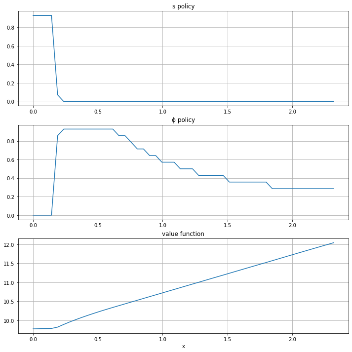
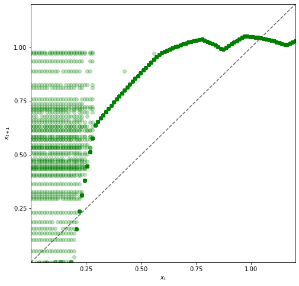
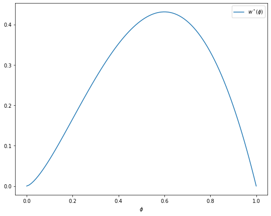

<!DOCTYPE html>

<html>
  <head>
    <meta charset="utf-8" />
    <meta name="viewport" content="width=device-width, initial-scale=1.0" />
    <title>27. Job Search VI: On-the-Job Search &#8212; Quantitative Economics with Python</title>
    <link rel="stylesheet" href="_static/quantecon-book-theme.css" type="text/css" />
    <link rel="stylesheet" href="_static/pygments.css" type="text/css" />
    <link rel="stylesheet" type="text/css" href="_static/togglebutton.css" />
    <link rel="stylesheet" type="text/css" href="_static/copybutton.css" />
    <link rel="stylesheet" type="text/css" href="_static/mystnb.css" />
    <link rel="stylesheet" type="text/css" href="_static/sphinx-thebe.css" />
    <link rel="stylesheet" type="text/css" href="_static/panels-main.c949a650a448cc0ae9fd3441c0e17fb0.css" />
    <link rel="stylesheet" type="text/css" href="_static/panels-variables.06eb56fa6e07937060861dad626602ad.css" />
    <script id="documentation_options" data-url_root="./" src="_static/documentation_options.js"></script>
    <script src="_static/quantecon-book-theme.js"></script>
    <script src="_static/jquery.js"></script>
    <script src="_static/underscore.js"></script>
    <script src="_static/doctools.js"></script>
    <script src="_static/language_data.js"></script>
    <script src="_static/togglebutton.js"></script>
    <script src="_static/clipboard.min.js"></script>
    <script src="_static/copybutton.js"></script>
    <script src="_static/quantecon-book-theme.js"></script>
    <script >var togglebuttonSelector = '.toggle, .admonition.dropdown, .tag_hide_input div.cell_input, .tag_hide-input div.cell_input, .tag_hide_output div.cell_output, .tag_hide-output div.cell_output, .tag_hide_cell.cell, .tag_hide-cell.cell';</script>
    <script src="_static/sphinx-book-theme.7d483ff0a819d6edff12ce0b1ead3928.js"></script>
    <script async="async" src="https://cdn.jsdelivr.net/npm/mathjax@3/es5/tex-mml-chtml.js"></script>
    <script type="text/x-mathjax-config">MathJax.Hub.Config({"tex2jax": {"inlineMath": [["\\(", "\\)"]], "displayMath": [["\\[", "\\]"]], "processRefs": false, "processEnvironments": false}})</script>
    <script async="async" src="https://unpkg.com/thebelab@latest/lib/index.js"></script>
    <script >
        const thebe_selector = ".thebe"
        const thebe_selector_input = "pre"
        const thebe_selector_output = ".output"
    </script>
    <script async="async" src="_static/sphinx-thebe.js"></script>
    <link rel="canonical" href="https://python.quantecon.org/jv.html" />
    <link rel="shortcut icon" href="_static/lectures-favicon.ico"/>
    <link rel="index" title="Index" href="genindex.html" />
    <link rel="search" title="Search" href="search.html" />
    <link rel="next" title="28. Cake Eating I: Introduction to Optimal Saving" href="cake_eating_problem.html" />
    <link rel="prev" title="26. Job Search V: Modeling Career Choice" href="career.html" />

<!-- Normal Meta Tags -->
<meta name="author" context="Thomas J. Sargent &amp; John Stachurski" />
<meta name="keywords" content="Python, QuantEcon, Quantitative Economics, Economics, Sloan, Alfred P. Sloan Foundation, Tom J. Sargent, John Stachurski" />
<meta name="description" content=This website presents a set of lectures on quantitative economic modeling, designed and written by Thomas J. Sargent and John Stachurski. />

<!-- Twitter tags -->
<meta name="twitter:card" content="summary" />
<meta name="twitter:site" content="@quantecon" />
<meta name="twitter:title" content="Job Search VI: On-the-Job Search"/>
<meta name="twitter:description" content="This website presents a set of lectures on quantitative economic modeling, designed and written by Thomas J. Sargent and John Stachurski.">
<meta name="twitter:creator" content="@quantecon">
<meta name="twitter:image" content="https://assets.quantecon.org/img/qe-twitter-logo.png">

<!-- Opengraph tags -->
<meta property="og:title" content="Job Search VI: On-the-Job Search" />
<meta property="og:type" content="website" />
<meta property="og:url" content="https://python.quantecon.org/jv.html" />
<meta property="og:image" content="https://assets.quantecon.org/img/qe-og-logo.png" />
<meta property="og:description" content="This website presents a set of lectures on quantitative economic modeling, designed and written by Thomas J. Sargent and John Stachurski." />
<meta property="og:site_name" content="Quantitative Economics with Python" />

<meta name="theme-color" content="#ffffff" />


  </head>
<body>


    <span id="top"></span>

    <div class="wrapper">

        <div class="main">

            <div class="page">

                <div class="page__toc">

                    <div class="inner">

                        
                        <div class="page__toc-header">
                            On this page
                        </div>


                        <nav id="bd-toc-nav" class="page__toc-nav">

                            <ul class="nav section-nav flex-column">
                                
                                <li class="nav-item toc-entry toc-h2">
                                    <a href="#overview" class="nav-link">Overview</a><ul class="nav section-nav flex-column">
                                        
                                <li class="nav-item toc-entry toc-h3">
                                    <a href="#model-features" class="nav-link">Model Features</a>
                                </li>
                                
                                    </ul>
                                </li>
                                
                                <li class="nav-item toc-entry toc-h2">
                                    <a href="#model" class="nav-link">Model</a><ul class="nav section-nav flex-column">
                                        
                                <li class="nav-item toc-entry toc-h3">
                                    <a href="#parameterization" class="nav-link">Parameterization</a>
                                </li>
                                
                                <li class="nav-item toc-entry toc-h3">
                                    <a href="#back-of-the-envelope-calculations" class="nav-link">Back-of-the-Envelope Calculations</a>
                                </li>
                                
                                    </ul>
                                </li>
                                
                                <li class="nav-item toc-entry toc-h2">
                                    <a href="#implementation" class="nav-link">Implementation</a>
                                </li>
                                
                                <li class="nav-item toc-entry toc-h2">
                                    <a href="#solving-for-policies" class="nav-link">Solving for Policies</a>
                                </li>
                                
                                <li class="nav-item toc-entry toc-h2">
                                    <a href="#exercises" class="nav-link">Exercises</a><ul class="nav section-nav flex-column">
                                        
                                <li class="nav-item toc-entry toc-h3">
                                    <a href="#exercise-1" class="nav-link">Exercise 1</a>
                                </li>
                                
                                <li class="nav-item toc-entry toc-h3">
                                    <a href="#exercise-2" class="nav-link">Exercise 2</a>
                                </li>
                                
                                    </ul>
                                </li>
                                
                                <li class="nav-item toc-entry toc-h2">
                                    <a href="#solutions" class="nav-link">Solutions</a><ul class="nav section-nav flex-column">
                                        
                                <li class="nav-item toc-entry toc-h3">
                                    <a href="#id3" class="nav-link">Exercise 1</a>
                                </li>
                                
                                <li class="nav-item toc-entry toc-h3">
                                    <a href="#id4" class="nav-link">Exercise 2</a>
                                </li>
                                
                                    </ul>
                                </li>
                                
                            </ul>

                            <p class="logo">
                                
                                    
                                    <a href=https://quantecon.org></a>
                                    
                                
                            </p>

                            <p class="powered">Powered by <a href="https://jupyterbook.org/">Jupyter Book</a></p>

                        </nav>

                        <div class="page__toc-footer">
                            
                            
                            <p><a href="#top"><strong>Back to top</strong></a></p>
                        </div>

                    </div>

                </div>

                <div class="page__header">

                    <div class="page__header-copy">

                        <p class="page__header-heading"><a href="intro.html">Quantitative Economics with Python</a></p>

                        <p class="page__header-subheading">Job Search VI: On-the-Job Search</p>

                    </div>

                    <p class="page__header-authors">Thomas J. Sargent & John Stachurski</p>

                </div> <!-- .page__header -->


                
                <main class="page__content" role="main">
                    
                    <div>
                        
  <div id="qe-notebook-header" align="right" style="text-align:right;">
        <a href="https://quantecon.org/" title="quantecon.org">
                
        </a>
</div><div class="section" id="job-search-vi-on-the-job-search">
<h1><a class="toc-backref" href="#id5"><span class="section-number">27. </span><span class="target" id="index-0"></span>Job Search VI: On-the-Job Search</a><a class="headerlink" href="#job-search-vi-on-the-job-search" title="Permalink to this headline">¶</a></h1>
<div class="contents topic" id="contents">
<span id="index-1"></span><p class="topic-title">Contents</p>
<ul class="simple">
<li><p><a class="reference internal" href="#job-search-vi-on-the-job-search" id="id5">Job Search VI: On-the-Job Search</a></p>
<ul>
<li><p><a class="reference internal" href="#overview" id="id6">Overview</a></p></li>
<li><p><a class="reference internal" href="#model" id="id7">Model</a></p></li>
<li><p><a class="reference internal" href="#implementation" id="id8">Implementation</a></p></li>
<li><p><a class="reference internal" href="#solving-for-policies" id="id9">Solving for Policies</a></p></li>
<li><p><a class="reference internal" href="#exercises" id="id10">Exercises</a></p></li>
<li><p><a class="reference internal" href="#solutions" id="id11">Solutions</a></p></li>
</ul>
</li>
</ul>
</div>
<p>In addition to what’s in Anaconda, this lecture will need the following libraries:</p>
<div class="cell tag_hide-output docutils container">
<div class="cell_input docutils container">
<div class="highlight-ipython3 notranslate"><div class="highlight"><pre><span></span><span class="o">!</span>conda install -y quantecon
<span class="o">!</span>pip install interpolation
</pre></div>
</div>
</div>
<div class="cell_output docutils container">
<div class="output stream highlight-myst-ansi notranslate"><div class="highlight"><pre><span></span>Collecting package metadata (current_repodata.json): - 
</pre></div>
</div>
<div class="output stream highlight-myst-ansi notranslate"><div class="highlight"><pre><span></span>\ 
</pre></div>
</div>
<div class="output stream highlight-myst-ansi notranslate"><div class="highlight"><pre><span></span>| 
</pre></div>
</div>
<div class="output stream highlight-myst-ansi notranslate"><div class="highlight"><pre><span></span>/ 
</pre></div>
</div>
<div class="output stream highlight-myst-ansi notranslate"><div class="highlight"><pre><span></span>- 
</pre></div>
</div>
<div class="output stream highlight-myst-ansi notranslate"><div class="highlight"><pre><span></span>\ 
</pre></div>
</div>
<div class="output stream highlight-myst-ansi notranslate"><div class="highlight"><pre><span></span>| 
</pre></div>
</div>
<div class="output stream highlight-myst-ansi notranslate"><div class="highlight"><pre><span></span>/ 
</pre></div>
</div>
<div class="output stream highlight-myst-ansi notranslate"><div class="highlight"><pre><span></span>- 
</pre></div>
</div>
<div class="output stream highlight-myst-ansi notranslate"><div class="highlight"><pre><span></span>\ 
</pre></div>
</div>
<div class="output stream highlight-myst-ansi notranslate"><div class="highlight"><pre><span></span>| 
</pre></div>
</div>
<div class="output stream highlight-myst-ansi notranslate"><div class="highlight"><pre><span></span>done
Solving environment: - 
</pre></div>
</div>
<div class="output stream highlight-myst-ansi notranslate"><div class="highlight"><pre><span></span>\ 
</pre></div>
</div>
<div class="output stream highlight-myst-ansi notranslate"><div class="highlight"><pre><span></span>| 
</pre></div>
</div>
<div class="output stream highlight-myst-ansi notranslate"><div class="highlight"><pre><span></span>/ 
</pre></div>
</div>
<div class="output stream highlight-myst-ansi notranslate"><div class="highlight"><pre><span></span>- 
</pre></div>
</div>
<div class="output stream highlight-myst-ansi notranslate"><div class="highlight"><pre><span></span>\ 
</pre></div>
</div>
<div class="output stream highlight-myst-ansi notranslate"><div class="highlight"><pre><span></span>| 
</pre></div>
</div>
<div class="output stream highlight-myst-ansi notranslate"><div class="highlight"><pre><span></span>/ 
</pre></div>
</div>
<div class="output stream highlight-myst-ansi notranslate"><div class="highlight"><pre><span></span>- 
</pre></div>
</div>
<div class="output stream highlight-myst-ansi notranslate"><div class="highlight"><pre><span></span>\ 
</pre></div>
</div>
<div class="output stream highlight-myst-ansi notranslate"><div class="highlight"><pre><span></span>| 
</pre></div>
</div>
<div class="output stream highlight-myst-ansi notranslate"><div class="highlight"><pre><span></span>/ 
</pre></div>
</div>
<div class="output stream highlight-myst-ansi notranslate"><div class="highlight"><pre><span></span>- 
</pre></div>
</div>
<div class="output stream highlight-myst-ansi notranslate"><div class="highlight"><pre><span></span>\ 
</pre></div>
</div>
<div class="output stream highlight-myst-ansi notranslate"><div class="highlight"><pre><span></span>| 
</pre></div>
</div>
<div class="output stream highlight-myst-ansi notranslate"><div class="highlight"><pre><span></span>/ 
</pre></div>
</div>
<div class="output stream highlight-myst-ansi notranslate"><div class="highlight"><pre><span></span>- 
</pre></div>
</div>
<div class="output stream highlight-myst-ansi notranslate"><div class="highlight"><pre><span></span>\ 
</pre></div>
</div>
<div class="output stream highlight-myst-ansi notranslate"><div class="highlight"><pre><span></span>| 
</pre></div>
</div>
<div class="output stream highlight-myst-ansi notranslate"><div class="highlight"><pre><span></span>/ 
</pre></div>
</div>
<div class="output stream highlight-myst-ansi notranslate"><div class="highlight"><pre><span></span>- 
</pre></div>
</div>
<div class="output stream highlight-myst-ansi notranslate"><div class="highlight"><pre><span></span>done
</pre></div>
</div>
<div class="output stream highlight-myst-ansi notranslate"><div class="highlight"><pre><span></span># All requested packages already installed.
</pre></div>
</div>
<div class="output stream highlight-myst-ansi notranslate"><div class="highlight"><pre><span></span>Requirement already satisfied: interpolation in /usr/share/miniconda3/envs/lecture-python/lib/python3.8/site-packages (2.2.1)
Requirement already satisfied: tempita&gt;=0.5.2 in /usr/share/miniconda3/envs/lecture-python/lib/python3.8/site-packages (from interpolation) (0.5.2)
Requirement already satisfied: scipy&gt;=1.4.1 in /usr/share/miniconda3/envs/lecture-python/lib/python3.8/site-packages (from interpolation) (1.5.2)
Requirement already satisfied: numba&gt;=0.47 in /usr/share/miniconda3/envs/lecture-python/lib/python3.8/site-packages (from interpolation) (0.51.2)
Requirement already satisfied: numpy&gt;=1.18.1 in /usr/share/miniconda3/envs/lecture-python/lib/python3.8/site-packages (from interpolation) (1.19.2)
Requirement already satisfied: llvmlite&lt;0.35,&gt;=0.34.0.dev0 in /usr/share/miniconda3/envs/lecture-python/lib/python3.8/site-packages (from numba&gt;=0.47-&gt;interpolation) (0.34.0)
Requirement already satisfied: setuptools in /usr/share/miniconda3/envs/lecture-python/lib/python3.8/site-packages (from numba&gt;=0.47-&gt;interpolation) (50.3.1.post20201107)
</pre></div>
</div>
</div>
</div>
<div class="section" id="overview">
<h2><a class="toc-backref" href="#id6"><span class="section-number">27.1. </span>Overview</a><a class="headerlink" href="#overview" title="Permalink to this headline">¶</a></h2>
<p>In this section, we solve a simple on-the-job search model</p>
<ul class="simple">
<li><p>based on <span id="id1">[<a class="reference internal" href="zreferences.html#id143"><span>LS18</span></a>]</span>, exercise 6.18, and <span id="id2">[<a class="reference internal" href="zreferences.html#id57"><span>Jov79</span></a>]</span></p></li>
</ul>
<p>Let’s start with some imports:</p>
<div class="cell docutils container">
<div class="cell_input docutils container">
<div class="highlight-ipython3 notranslate"><div class="highlight"><pre><span></span><span class="kn">import</span> <span class="nn">numpy</span> <span class="k">as</span> <span class="nn">np</span>
<span class="kn">import</span> <span class="nn">scipy.stats</span> <span class="k">as</span> <span class="nn">stats</span>
<span class="kn">from</span> <span class="nn">interpolation</span> <span class="kn">import</span> <span class="n">interp</span>
<span class="kn">from</span> <span class="nn">numba</span> <span class="kn">import</span> <span class="n">njit</span><span class="p">,</span> <span class="n">prange</span>
<span class="kn">import</span> <span class="nn">matplotlib.pyplot</span> <span class="k">as</span> <span class="nn">plt</span>
<span class="o">%</span><span class="k">matplotlib</span> inline
<span class="kn">from</span> <span class="nn">math</span> <span class="kn">import</span> <span class="n">gamma</span>
</pre></div>
</div>
</div>
</div>
<div class="section" id="model-features">
<h3><span class="section-number">27.1.1. </span>Model Features<a class="headerlink" href="#model-features" title="Permalink to this headline">¶</a></h3>
<ul class="simple" id="index-2">
<li><p>job-specific human capital accumulation combined with on-the-job search</p></li>
<li><p>infinite-horizon dynamic programming with one state variable and two controls</p></li>
</ul>
</div>
</div>
<div class="section" id="model">
<h2><a class="toc-backref" href="#id7"><span class="section-number">27.2. </span>Model</a><a class="headerlink" href="#model" title="Permalink to this headline">¶</a></h2>
<p id="index-3">Let <span class="math notranslate nohighlight">\(x_t\)</span> denote the time-<span class="math notranslate nohighlight">\(t\)</span> job-specific human capital of a worker employed at a given firm and let  <span class="math notranslate nohighlight">\(w_t\)</span> denote current wages.</p>
<p>Let <span class="math notranslate nohighlight">\(w_t = x_t(1 - s_t - \phi_t)\)</span>, where</p>
<ul class="simple">
<li><p><span class="math notranslate nohighlight">\(\phi_t\)</span> is investment in job-specific human capital for the current role and</p></li>
<li><p><span class="math notranslate nohighlight">\(s_t\)</span> is search effort, devoted to obtaining new offers from other firms.</p></li>
</ul>
<p>For as long as the worker remains in the current job, evolution of <span class="math notranslate nohighlight">\(\{x_t\}\)</span> is given by <span class="math notranslate nohighlight">\(x_{t+1} = g(x_t, \phi_t)\)</span>.</p>
<p>When search effort at <span class="math notranslate nohighlight">\(t\)</span> is <span class="math notranslate nohighlight">\(s_t\)</span>, the worker receives a new job offer with probability <span class="math notranslate nohighlight">\(\pi(s_t) \in [0, 1]\)</span>.</p>
<p>The value of the offer, measured in job-specific human capital,  is <span class="math notranslate nohighlight">\(u_{t+1}\)</span>, where <span class="math notranslate nohighlight">\(\{u_t\}\)</span> is IID with common distribution <span class="math notranslate nohighlight">\(f\)</span>.</p>
<p>The worker can reject the current offer and continue with existing job.</p>
<p>Hence <span class="math notranslate nohighlight">\(x_{t+1} = u_{t+1}\)</span> if he/she accepts and <span class="math notranslate nohighlight">\(x_{t+1} = g(x_t, \phi_t)\)</span> otherwise.</p>
<p>Let <span class="math notranslate nohighlight">\(b_{t+1} \in \{0,1\}\)</span> be a binary random variable, where <span class="math notranslate nohighlight">\(b_{t+1} = 1\)</span> indicates that the worker receives an offer at the end of time <span class="math notranslate nohighlight">\(t\)</span>.</p>
<p>We can write</p>
<div class="math notranslate nohighlight" id="equation-jd">
<span class="eqno">(27.1)<a class="headerlink" href="#equation-jd" title="Permalink to this equation">¶</a></span>\[x_{t+1}
= (1 - b_{t+1}) g(x_t, \phi_t) + b_{t+1}
    \max \{ g(x_t, \phi_t), u_{t+1}\}\]</div>
<p>Agent’s objective: maximize expected discounted sum of wages via controls <span class="math notranslate nohighlight">\(\{s_t\}\)</span> and <span class="math notranslate nohighlight">\(\{\phi_t\}\)</span>.</p>
<p>Taking the expectation of <span class="math notranslate nohighlight">\(v(x_{t+1})\)</span> and using <a class="reference internal" href="#equation-jd">(27.1)</a>,
the Bellman equation for this problem can be written as</p>
<div class="math notranslate nohighlight" id="equation-jvbell">
<span class="eqno">(27.2)<a class="headerlink" href="#equation-jvbell" title="Permalink to this equation">¶</a></span>\[v(x)
= \max_{s + \phi \leq 1}
    \left\{
        x (1 - s - \phi) + \beta (1 - \pi(s)) v[g(x, \phi)] +
        \beta \pi(s) \int v[g(x, \phi) \vee u] f(du)
     \right\}\]</div>
<p>Here nonnegativity of <span class="math notranslate nohighlight">\(s\)</span> and <span class="math notranslate nohighlight">\(\phi\)</span> is understood, while
<span class="math notranslate nohighlight">\(a \vee b := \max\{a, b\}\)</span>.</p>
<div class="section" id="parameterization">
<h3><span class="section-number">27.2.1. </span>Parameterization<a class="headerlink" href="#parameterization" title="Permalink to this headline">¶</a></h3>
<p id="index-4">In the implementation below, we will focus on the parameterization</p>
<div class="math notranslate nohighlight">
\[
g(x, \phi) = A (x \phi)^{\alpha},
\quad
\pi(s) = \sqrt s
\quad \text{and} \quad
f = \text{Beta}(2, 2)
\]</div>
<p>with default parameter values</p>
<ul class="simple">
<li><p><span class="math notranslate nohighlight">\(A = 1.4\)</span></p></li>
<li><p><span class="math notranslate nohighlight">\(\alpha = 0.6\)</span></p></li>
<li><p><span class="math notranslate nohighlight">\(\beta = 0.96\)</span></p></li>
</ul>
<p>The <span class="math notranslate nohighlight">\(\text{Beta}(2,2)\)</span> distribution is supported on <span class="math notranslate nohighlight">\((0,1)\)</span> - it has a unimodal, symmetric density peaked at 0.5.</p>
</div>
<div class="section" id="back-of-the-envelope-calculations">
<span id="jvboecalc"></span><h3><span class="section-number">27.2.2. </span>Back-of-the-Envelope Calculations<a class="headerlink" href="#back-of-the-envelope-calculations" title="Permalink to this headline">¶</a></h3>
<p>Before we solve the model, let’s make some quick calculations that
provide intuition on what the solution should look like.</p>
<p>To begin, observe that the worker has two instruments to build
capital and hence wages:</p>
<ol class="simple">
<li><p>invest in capital specific to the current job via <span class="math notranslate nohighlight">\(\phi\)</span></p></li>
<li><p>search for a new job with better job-specific capital match via <span class="math notranslate nohighlight">\(s\)</span></p></li>
</ol>
<p>Since wages are <span class="math notranslate nohighlight">\(x (1 - s - \phi)\)</span>, marginal cost of investment via either <span class="math notranslate nohighlight">\(\phi\)</span> or <span class="math notranslate nohighlight">\(s\)</span> is identical.</p>
<p>Our risk-neutral worker should focus on whatever instrument has the highest expected return.</p>
<p>The relative expected return will depend on <span class="math notranslate nohighlight">\(x\)</span>.</p>
<p>For example, suppose first that <span class="math notranslate nohighlight">\(x = 0.05\)</span></p>
<ul class="simple">
<li><p>If <span class="math notranslate nohighlight">\(s=1\)</span> and <span class="math notranslate nohighlight">\(\phi = 0\)</span>, then since <span class="math notranslate nohighlight">\(g(x,\phi) = 0\)</span>,
taking expectations of <a class="reference internal" href="#equation-jd">(27.1)</a> gives expected next period capital equal to <span class="math notranslate nohighlight">\(\pi(s) \mathbb{E} u
= \mathbb{E} u = 0.5\)</span>.</p></li>
<li><p>If <span class="math notranslate nohighlight">\(s=0\)</span> and <span class="math notranslate nohighlight">\(\phi=1\)</span>, then next period capital is <span class="math notranslate nohighlight">\(g(x, \phi) = g(0.05, 1) \approx 0.23\)</span>.</p></li>
</ul>
<p>Both rates of return are good, but the return from search is better.</p>
<p>Next, suppose that <span class="math notranslate nohighlight">\(x = 0.4\)</span></p>
<ul class="simple">
<li><p>If <span class="math notranslate nohighlight">\(s=1\)</span> and <span class="math notranslate nohighlight">\(\phi = 0\)</span>, then expected next period capital is again <span class="math notranslate nohighlight">\(0.5\)</span></p></li>
<li><p>If <span class="math notranslate nohighlight">\(s=0\)</span> and <span class="math notranslate nohighlight">\(\phi = 1\)</span>, then <span class="math notranslate nohighlight">\(g(x, \phi) = g(0.4, 1) \approx 0.8\)</span></p></li>
</ul>
<p>Return from investment via <span class="math notranslate nohighlight">\(\phi\)</span> dominates expected return from search.</p>
<p>Combining these observations gives us two informal predictions:</p>
<ol class="simple">
<li><p>At any given state <span class="math notranslate nohighlight">\(x\)</span>, the two controls <span class="math notranslate nohighlight">\(\phi\)</span> and <span class="math notranslate nohighlight">\(s\)</span> will
function primarily as substitutes — worker will focus on whichever instrument has the higher expected return.</p></li>
<li><p>For sufficiently small <span class="math notranslate nohighlight">\(x\)</span>, search will be preferable to investment in
job-specific human capital.  For larger <span class="math notranslate nohighlight">\(x\)</span>, the reverse will be true.</p></li>
</ol>
<p>Now let’s turn to implementation, and see if we can match our predictions.</p>
</div>
</div>
<div class="section" id="implementation">
<h2><a class="toc-backref" href="#id8"><span class="section-number">27.3. </span>Implementation</a><a class="headerlink" href="#implementation" title="Permalink to this headline">¶</a></h2>
<p id="index-5">We will set up a class <code class="docutils literal notranslate"><span class="pre">JVWorker</span></code> that holds the parameters of the model described above</p>
<div class="cell docutils container">
<div class="cell_input docutils container">
<div class="highlight-ipython3 notranslate"><div class="highlight"><pre><span></span><span class="k">class</span> <span class="nc">JVWorker</span><span class="p">:</span>
    <span class="sa">r</span><span class="sd">&quot;&quot;&quot;</span>
<span class="sd">    A Jovanovic-type model of employment with on-the-job search.</span>

<span class="sd">    &quot;&quot;&quot;</span>

    <span class="k">def</span> <span class="fm">__init__</span><span class="p">(</span><span class="bp">self</span><span class="p">,</span>
                 <span class="n">A</span><span class="o">=</span><span class="mf">1.4</span><span class="p">,</span>
                 <span class="n">α</span><span class="o">=</span><span class="mf">0.6</span><span class="p">,</span>
                 <span class="n">β</span><span class="o">=</span><span class="mf">0.96</span><span class="p">,</span>         <span class="c1"># Discount factor</span>
                 <span class="n">π</span><span class="o">=</span><span class="n">np</span><span class="o">.</span><span class="n">sqrt</span><span class="p">,</span>      <span class="c1"># Search effort function</span>
                 <span class="n">a</span><span class="o">=</span><span class="mi">2</span><span class="p">,</span>            <span class="c1"># Parameter of f</span>
                 <span class="n">b</span><span class="o">=</span><span class="mi">2</span><span class="p">,</span>            <span class="c1"># Parameter of f</span>
                 <span class="n">grid_size</span><span class="o">=</span><span class="mi">50</span><span class="p">,</span>
                 <span class="n">mc_size</span><span class="o">=</span><span class="mi">100</span><span class="p">,</span>
                 <span class="n">ɛ</span><span class="o">=</span><span class="mf">1e-4</span><span class="p">):</span>

        <span class="bp">self</span><span class="o">.</span><span class="n">A</span><span class="p">,</span> <span class="bp">self</span><span class="o">.</span><span class="n">α</span><span class="p">,</span> <span class="bp">self</span><span class="o">.</span><span class="n">β</span><span class="p">,</span> <span class="bp">self</span><span class="o">.</span><span class="n">π</span> <span class="o">=</span> <span class="n">A</span><span class="p">,</span> <span class="n">α</span><span class="p">,</span> <span class="n">β</span><span class="p">,</span> <span class="n">π</span>
        <span class="bp">self</span><span class="o">.</span><span class="n">mc_size</span><span class="p">,</span> <span class="bp">self</span><span class="o">.</span><span class="n">ɛ</span> <span class="o">=</span> <span class="n">mc_size</span><span class="p">,</span> <span class="n">ɛ</span>

        <span class="bp">self</span><span class="o">.</span><span class="n">g</span> <span class="o">=</span> <span class="n">njit</span><span class="p">(</span><span class="k">lambda</span> <span class="n">x</span><span class="p">,</span> <span class="n">ϕ</span><span class="p">:</span> <span class="n">A</span> <span class="o">*</span> <span class="p">(</span><span class="n">x</span> <span class="o">*</span> <span class="n">ϕ</span><span class="p">)</span><span class="o">**</span><span class="n">α</span><span class="p">)</span>    <span class="c1"># Transition function</span>
        <span class="bp">self</span><span class="o">.</span><span class="n">f_rvs</span> <span class="o">=</span> <span class="n">np</span><span class="o">.</span><span class="n">random</span><span class="o">.</span><span class="n">beta</span><span class="p">(</span><span class="n">a</span><span class="p">,</span> <span class="n">b</span><span class="p">,</span> <span class="n">mc_size</span><span class="p">)</span>

        <span class="c1"># Max of grid is the max of a large quantile value for f and the</span>
        <span class="c1"># fixed point y = g(y, 1)</span>
        <span class="n">ɛ</span> <span class="o">=</span> <span class="mf">1e-4</span>
        <span class="n">grid_max</span> <span class="o">=</span> <span class="nb">max</span><span class="p">(</span><span class="n">A</span><span class="o">**</span><span class="p">(</span><span class="mi">1</span> <span class="o">/</span> <span class="p">(</span><span class="mi">1</span> <span class="o">-</span> <span class="n">α</span><span class="p">)),</span> <span class="n">stats</span><span class="o">.</span><span class="n">beta</span><span class="p">(</span><span class="n">a</span><span class="p">,</span> <span class="n">b</span><span class="p">)</span><span class="o">.</span><span class="n">ppf</span><span class="p">(</span><span class="mi">1</span> <span class="o">-</span> <span class="n">ɛ</span><span class="p">))</span>

        <span class="c1"># Human capital</span>
        <span class="bp">self</span><span class="o">.</span><span class="n">x_grid</span> <span class="o">=</span> <span class="n">np</span><span class="o">.</span><span class="n">linspace</span><span class="p">(</span><span class="n">ɛ</span><span class="p">,</span> <span class="n">grid_max</span><span class="p">,</span> <span class="n">grid_size</span><span class="p">)</span>
</pre></div>
</div>
</div>
</div>
<p>The function <code class="docutils literal notranslate"><span class="pre">operator_factory</span></code> takes an instance of this class and returns a
jitted version of the Bellman operator <code class="docutils literal notranslate"><span class="pre">T</span></code>, i.e.</p>
<div class="math notranslate nohighlight">
\[
Tv(x)
= \max_{s + \phi \leq 1} w(s, \phi)
\]</div>
<p>where</p>
<div class="math notranslate nohighlight" id="equation-defw">
<span class="eqno">(27.3)<a class="headerlink" href="#equation-defw" title="Permalink to this equation">¶</a></span>\[w(s, \phi)
 := x (1 - s - \phi) + \beta (1 - \pi(s)) v[g(x, \phi)] +
         \beta \pi(s) \int v[g(x, \phi) \vee u] f(du)\]</div>
<p>When we represent <span class="math notranslate nohighlight">\(v\)</span>, it will be with a NumPy array <code class="docutils literal notranslate"><span class="pre">v</span></code> giving values on grid <code class="docutils literal notranslate"><span class="pre">x_grid</span></code>.</p>
<p>But to evaluate the right-hand side of <a class="reference internal" href="#equation-defw">(27.3)</a>, we need a function, so
we replace the arrays <code class="docutils literal notranslate"><span class="pre">v</span></code> and <code class="docutils literal notranslate"><span class="pre">x_grid</span></code> with a function <code class="docutils literal notranslate"><span class="pre">v_func</span></code> that gives linear
interpolation of <code class="docutils literal notranslate"><span class="pre">v</span></code> on <code class="docutils literal notranslate"><span class="pre">x_grid</span></code>.</p>
<p>Inside the <code class="docutils literal notranslate"><span class="pre">for</span></code> loop, for each <code class="docutils literal notranslate"><span class="pre">x</span></code> in the grid over the state space, we
set up the function <span class="math notranslate nohighlight">\(w(z) = w(s, \phi)\)</span> defined in <a class="reference internal" href="#equation-defw">(27.3)</a>.</p>
<p>The function is maximized over all feasible <span class="math notranslate nohighlight">\((s, \phi)\)</span> pairs.</p>
<p>Another function, <code class="docutils literal notranslate"><span class="pre">get_greedy</span></code> returns the optimal choice of <span class="math notranslate nohighlight">\(s\)</span> and <span class="math notranslate nohighlight">\(\phi\)</span>
at each <span class="math notranslate nohighlight">\(x\)</span>, given a value function.</p>
<div class="cell docutils container">
<div class="cell_input docutils container">
<div class="highlight-ipython3 notranslate"><div class="highlight"><pre><span></span><span class="k">def</span> <span class="nf">operator_factory</span><span class="p">(</span><span class="n">jv</span><span class="p">,</span> <span class="n">parallel_flag</span><span class="o">=</span><span class="kc">True</span><span class="p">):</span>

    <span class="sd">&quot;&quot;&quot;</span>
<span class="sd">    Returns a jitted version of the Bellman operator T</span>

<span class="sd">    jv is an instance of JVWorker</span>

<span class="sd">    &quot;&quot;&quot;</span>

    <span class="n">π</span><span class="p">,</span> <span class="n">β</span> <span class="o">=</span> <span class="n">jv</span><span class="o">.</span><span class="n">π</span><span class="p">,</span> <span class="n">jv</span><span class="o">.</span><span class="n">β</span>
    <span class="n">x_grid</span><span class="p">,</span> <span class="n">ɛ</span><span class="p">,</span> <span class="n">mc_size</span> <span class="o">=</span> <span class="n">jv</span><span class="o">.</span><span class="n">x_grid</span><span class="p">,</span> <span class="n">jv</span><span class="o">.</span><span class="n">ɛ</span><span class="p">,</span> <span class="n">jv</span><span class="o">.</span><span class="n">mc_size</span>
    <span class="n">f_rvs</span><span class="p">,</span> <span class="n">g</span> <span class="o">=</span> <span class="n">jv</span><span class="o">.</span><span class="n">f_rvs</span><span class="p">,</span> <span class="n">jv</span><span class="o">.</span><span class="n">g</span>

    <span class="nd">@njit</span>
    <span class="k">def</span> <span class="nf">state_action_values</span><span class="p">(</span><span class="n">z</span><span class="p">,</span> <span class="n">x</span><span class="p">,</span> <span class="n">v</span><span class="p">):</span>
        <span class="n">s</span><span class="p">,</span> <span class="n">ϕ</span> <span class="o">=</span> <span class="n">z</span>
        <span class="n">v_func</span> <span class="o">=</span> <span class="k">lambda</span> <span class="n">x</span><span class="p">:</span> <span class="n">interp</span><span class="p">(</span><span class="n">x_grid</span><span class="p">,</span> <span class="n">v</span><span class="p">,</span> <span class="n">x</span><span class="p">)</span>

        <span class="n">integral</span> <span class="o">=</span> <span class="mi">0</span>
        <span class="k">for</span> <span class="n">m</span> <span class="ow">in</span> <span class="nb">range</span><span class="p">(</span><span class="n">mc_size</span><span class="p">):</span>
            <span class="n">u</span> <span class="o">=</span> <span class="n">f_rvs</span><span class="p">[</span><span class="n">m</span><span class="p">]</span>
            <span class="n">integral</span> <span class="o">+=</span> <span class="n">v_func</span><span class="p">(</span><span class="nb">max</span><span class="p">(</span><span class="n">g</span><span class="p">(</span><span class="n">x</span><span class="p">,</span> <span class="n">ϕ</span><span class="p">),</span> <span class="n">u</span><span class="p">))</span>
        <span class="n">integral</span> <span class="o">=</span> <span class="n">integral</span> <span class="o">/</span> <span class="n">mc_size</span>

        <span class="n">q</span> <span class="o">=</span> <span class="n">π</span><span class="p">(</span><span class="n">s</span><span class="p">)</span> <span class="o">*</span> <span class="n">integral</span> <span class="o">+</span> <span class="p">(</span><span class="mi">1</span> <span class="o">-</span> <span class="n">π</span><span class="p">(</span><span class="n">s</span><span class="p">))</span> <span class="o">*</span> <span class="n">v_func</span><span class="p">(</span><span class="n">g</span><span class="p">(</span><span class="n">x</span><span class="p">,</span> <span class="n">ϕ</span><span class="p">))</span>
        <span class="k">return</span> <span class="n">x</span> <span class="o">*</span> <span class="p">(</span><span class="mi">1</span> <span class="o">-</span> <span class="n">ϕ</span> <span class="o">-</span> <span class="n">s</span><span class="p">)</span> <span class="o">+</span> <span class="n">β</span> <span class="o">*</span> <span class="n">q</span>

    <span class="nd">@njit</span><span class="p">(</span><span class="n">parallel</span><span class="o">=</span><span class="n">parallel_flag</span><span class="p">)</span>
    <span class="k">def</span> <span class="nf">T</span><span class="p">(</span><span class="n">v</span><span class="p">):</span>
        <span class="sd">&quot;&quot;&quot;</span>
<span class="sd">        The Bellman operator</span>
<span class="sd">        &quot;&quot;&quot;</span>

        <span class="n">v_new</span> <span class="o">=</span> <span class="n">np</span><span class="o">.</span><span class="n">empty_like</span><span class="p">(</span><span class="n">v</span><span class="p">)</span>
        <span class="k">for</span> <span class="n">i</span> <span class="ow">in</span> <span class="n">prange</span><span class="p">(</span><span class="nb">len</span><span class="p">(</span><span class="n">x_grid</span><span class="p">)):</span>
            <span class="n">x</span> <span class="o">=</span> <span class="n">x_grid</span><span class="p">[</span><span class="n">i</span><span class="p">]</span>

            <span class="c1"># Search on a grid</span>
            <span class="n">search_grid</span> <span class="o">=</span> <span class="n">np</span><span class="o">.</span><span class="n">linspace</span><span class="p">(</span><span class="n">ɛ</span><span class="p">,</span> <span class="mi">1</span><span class="p">,</span> <span class="mi">15</span><span class="p">)</span>
            <span class="n">max_val</span> <span class="o">=</span> <span class="o">-</span><span class="mi">1</span>
            <span class="k">for</span> <span class="n">s</span> <span class="ow">in</span> <span class="n">search_grid</span><span class="p">:</span>
                <span class="k">for</span> <span class="n">ϕ</span> <span class="ow">in</span> <span class="n">search_grid</span><span class="p">:</span>
                    <span class="n">current_val</span> <span class="o">=</span> <span class="n">state_action_values</span><span class="p">((</span><span class="n">s</span><span class="p">,</span> <span class="n">ϕ</span><span class="p">),</span> <span class="n">x</span><span class="p">,</span> <span class="n">v</span><span class="p">)</span> <span class="k">if</span> <span class="n">s</span> <span class="o">+</span> <span class="n">ϕ</span> <span class="o">&lt;=</span> <span class="mi">1</span> <span class="k">else</span> <span class="o">-</span><span class="mi">1</span>
                    <span class="k">if</span> <span class="n">current_val</span> <span class="o">&gt;</span> <span class="n">max_val</span><span class="p">:</span>
                        <span class="n">max_val</span> <span class="o">=</span> <span class="n">current_val</span>
            <span class="n">v_new</span><span class="p">[</span><span class="n">i</span><span class="p">]</span> <span class="o">=</span> <span class="n">max_val</span>

        <span class="k">return</span> <span class="n">v_new</span>

    <span class="nd">@njit</span>
    <span class="k">def</span> <span class="nf">get_greedy</span><span class="p">(</span><span class="n">v</span><span class="p">):</span>
        <span class="sd">&quot;&quot;&quot;</span>
<span class="sd">        Computes the v-greedy policy of a given function v</span>
<span class="sd">        &quot;&quot;&quot;</span>
        <span class="n">s_policy</span><span class="p">,</span> <span class="n">ϕ_policy</span> <span class="o">=</span> <span class="n">np</span><span class="o">.</span><span class="n">empty_like</span><span class="p">(</span><span class="n">v</span><span class="p">),</span> <span class="n">np</span><span class="o">.</span><span class="n">empty_like</span><span class="p">(</span><span class="n">v</span><span class="p">)</span>

        <span class="k">for</span> <span class="n">i</span> <span class="ow">in</span> <span class="nb">range</span><span class="p">(</span><span class="nb">len</span><span class="p">(</span><span class="n">x_grid</span><span class="p">)):</span>
            <span class="n">x</span> <span class="o">=</span> <span class="n">x_grid</span><span class="p">[</span><span class="n">i</span><span class="p">]</span>
            <span class="c1"># Search on a grid</span>
            <span class="n">search_grid</span> <span class="o">=</span> <span class="n">np</span><span class="o">.</span><span class="n">linspace</span><span class="p">(</span><span class="n">ɛ</span><span class="p">,</span> <span class="mi">1</span><span class="p">,</span> <span class="mi">15</span><span class="p">)</span>
            <span class="n">max_val</span> <span class="o">=</span> <span class="o">-</span><span class="mi">1</span>
            <span class="k">for</span> <span class="n">s</span> <span class="ow">in</span> <span class="n">search_grid</span><span class="p">:</span>
                <span class="k">for</span> <span class="n">ϕ</span> <span class="ow">in</span> <span class="n">search_grid</span><span class="p">:</span>
                    <span class="n">current_val</span> <span class="o">=</span> <span class="n">state_action_values</span><span class="p">((</span><span class="n">s</span><span class="p">,</span> <span class="n">ϕ</span><span class="p">),</span> <span class="n">x</span><span class="p">,</span> <span class="n">v</span><span class="p">)</span> <span class="k">if</span> <span class="n">s</span> <span class="o">+</span> <span class="n">ϕ</span> <span class="o">&lt;=</span> <span class="mi">1</span> <span class="k">else</span> <span class="o">-</span><span class="mi">1</span>
                    <span class="k">if</span> <span class="n">current_val</span> <span class="o">&gt;</span> <span class="n">max_val</span><span class="p">:</span>
                        <span class="n">max_val</span> <span class="o">=</span> <span class="n">current_val</span>
                        <span class="n">max_s</span><span class="p">,</span> <span class="n">max_ϕ</span> <span class="o">=</span> <span class="n">s</span><span class="p">,</span> <span class="n">ϕ</span>
                        <span class="n">s_policy</span><span class="p">[</span><span class="n">i</span><span class="p">],</span> <span class="n">ϕ_policy</span><span class="p">[</span><span class="n">i</span><span class="p">]</span> <span class="o">=</span> <span class="n">max_s</span><span class="p">,</span> <span class="n">max_ϕ</span>
        <span class="k">return</span> <span class="n">s_policy</span><span class="p">,</span> <span class="n">ϕ_policy</span>

    <span class="k">return</span> <span class="n">T</span><span class="p">,</span> <span class="n">get_greedy</span>
</pre></div>
</div>
</div>
</div>
<p>To solve the model, we will write a function that uses the Bellman operator
and iterates to find a fixed point.</p>
<div class="cell docutils container">
<div class="cell_input docutils container">
<div class="highlight-ipython3 notranslate"><div class="highlight"><pre><span></span><span class="k">def</span> <span class="nf">solve_model</span><span class="p">(</span><span class="n">jv</span><span class="p">,</span>
                <span class="n">use_parallel</span><span class="o">=</span><span class="kc">True</span><span class="p">,</span>
                <span class="n">tol</span><span class="o">=</span><span class="mf">1e-4</span><span class="p">,</span>
                <span class="n">max_iter</span><span class="o">=</span><span class="mi">1000</span><span class="p">,</span>
                <span class="n">verbose</span><span class="o">=</span><span class="kc">True</span><span class="p">,</span>
                <span class="n">print_skip</span><span class="o">=</span><span class="mi">25</span><span class="p">):</span>

    <span class="sd">&quot;&quot;&quot;</span>
<span class="sd">    Solves the model by value function iteration</span>

<span class="sd">    * jv is an instance of JVWorker</span>

<span class="sd">    &quot;&quot;&quot;</span>

    <span class="n">T</span><span class="p">,</span> <span class="n">_</span> <span class="o">=</span> <span class="n">operator_factory</span><span class="p">(</span><span class="n">jv</span><span class="p">,</span> <span class="n">parallel_flag</span><span class="o">=</span><span class="n">use_parallel</span><span class="p">)</span>

    <span class="c1"># Set up loop</span>
    <span class="n">v</span> <span class="o">=</span> <span class="n">jv</span><span class="o">.</span><span class="n">x_grid</span> <span class="o">*</span> <span class="mf">0.5</span>  <span class="c1"># Initial condition</span>
    <span class="n">i</span> <span class="o">=</span> <span class="mi">0</span>
    <span class="n">error</span> <span class="o">=</span> <span class="n">tol</span> <span class="o">+</span> <span class="mi">1</span>

    <span class="k">while</span> <span class="n">i</span> <span class="o">&lt;</span> <span class="n">max_iter</span> <span class="ow">and</span> <span class="n">error</span> <span class="o">&gt;</span> <span class="n">tol</span><span class="p">:</span>
        <span class="n">v_new</span> <span class="o">=</span> <span class="n">T</span><span class="p">(</span><span class="n">v</span><span class="p">)</span>
        <span class="n">error</span> <span class="o">=</span> <span class="n">np</span><span class="o">.</span><span class="n">max</span><span class="p">(</span><span class="n">np</span><span class="o">.</span><span class="n">abs</span><span class="p">(</span><span class="n">v</span> <span class="o">-</span> <span class="n">v_new</span><span class="p">))</span>
        <span class="n">i</span> <span class="o">+=</span> <span class="mi">1</span>
        <span class="k">if</span> <span class="n">verbose</span> <span class="ow">and</span> <span class="n">i</span> <span class="o">%</span> <span class="n">print_skip</span> <span class="o">==</span> <span class="mi">0</span><span class="p">:</span>
            <span class="nb">print</span><span class="p">(</span><span class="sa">f</span><span class="s2">&quot;Error at iteration </span><span class="si">{</span><span class="n">i</span><span class="si">}</span><span class="s2"> is </span><span class="si">{</span><span class="n">error</span><span class="si">}</span><span class="s2">.&quot;</span><span class="p">)</span>
        <span class="n">v</span> <span class="o">=</span> <span class="n">v_new</span>

    <span class="k">if</span> <span class="n">i</span> <span class="o">==</span> <span class="n">max_iter</span><span class="p">:</span>
        <span class="nb">print</span><span class="p">(</span><span class="s2">&quot;Failed to converge!&quot;</span><span class="p">)</span>

    <span class="k">if</span> <span class="n">verbose</span> <span class="ow">and</span> <span class="n">i</span> <span class="o">&lt;</span> <span class="n">max_iter</span><span class="p">:</span>
        <span class="nb">print</span><span class="p">(</span><span class="sa">f</span><span class="s2">&quot;</span><span class="se">\n</span><span class="s2">Converged in </span><span class="si">{</span><span class="n">i</span><span class="si">}</span><span class="s2"> iterations.&quot;</span><span class="p">)</span>

    <span class="k">return</span> <span class="n">v_new</span>
</pre></div>
</div>
</div>
</div>
</div>
<div class="section" id="solving-for-policies">
<h2><a class="toc-backref" href="#id9"><span class="section-number">27.4. </span>Solving for Policies</a><a class="headerlink" href="#solving-for-policies" title="Permalink to this headline">¶</a></h2>
<p id="index-6">Let’s generate the optimal policies and see what they look like.</p>
<div class="cell docutils container" id="jv-policies">
<div class="cell_input docutils container">
<div class="highlight-ipython3 notranslate"><div class="highlight"><pre><span></span><span class="n">jv</span> <span class="o">=</span> <span class="n">JVWorker</span><span class="p">()</span>
<span class="n">T</span><span class="p">,</span> <span class="n">get_greedy</span> <span class="o">=</span> <span class="n">operator_factory</span><span class="p">(</span><span class="n">jv</span><span class="p">)</span>
<span class="n">v_star</span> <span class="o">=</span> <span class="n">solve_model</span><span class="p">(</span><span class="n">jv</span><span class="p">)</span>
<span class="n">s_star</span><span class="p">,</span> <span class="n">ϕ_star</span> <span class="o">=</span> <span class="n">get_greedy</span><span class="p">(</span><span class="n">v_star</span><span class="p">)</span>
</pre></div>
</div>
</div>
<div class="cell_output docutils container">
<div class="output stream highlight-myst-ansi notranslate"><div class="highlight"><pre><span></span>Error at iteration 25 is 0.1511125741968895.
</pre></div>
</div>
<div class="output stream highlight-myst-ansi notranslate"><div class="highlight"><pre><span></span>Error at iteration 50 is 0.054460475590817126.
</pre></div>
</div>
<div class="output stream highlight-myst-ansi notranslate"><div class="highlight"><pre><span></span>Error at iteration 75 is 0.019627376601460966.
</pre></div>
</div>
<div class="output stream highlight-myst-ansi notranslate"><div class="highlight"><pre><span></span>Error at iteration 100 is 0.007073642087705778.
</pre></div>
</div>
<div class="output stream highlight-myst-ansi notranslate"><div class="highlight"><pre><span></span>Error at iteration 125 is 0.002549317384643146.
</pre></div>
</div>
<div class="output stream highlight-myst-ansi notranslate"><div class="highlight"><pre><span></span>Error at iteration 150 is 0.0009187656156548485.
</pre></div>
</div>
<div class="output stream highlight-myst-ansi notranslate"><div class="highlight"><pre><span></span>Error at iteration 175 is 0.00033112011144709186.
</pre></div>
</div>
<div class="output stream highlight-myst-ansi notranslate"><div class="highlight"><pre><span></span>Error at iteration 200 is 0.00011933460105595373.

Converged in 205 iterations.
</pre></div>
</div>
</div>
</div>
<p>Here are the plots:</p>
<div class="cell docutils container">
<div class="cell_input docutils container">
<div class="highlight-ipython3 notranslate"><div class="highlight"><pre><span></span><span class="n">plots</span> <span class="o">=</span> <span class="p">[</span><span class="n">s_star</span><span class="p">,</span> <span class="n">ϕ_star</span><span class="p">,</span> <span class="n">v_star</span><span class="p">]</span>
<span class="n">titles</span> <span class="o">=</span> <span class="p">[</span><span class="s2">&quot;s policy&quot;</span><span class="p">,</span> <span class="s2">&quot;ϕ policy&quot;</span><span class="p">,</span>  <span class="s2">&quot;value function&quot;</span><span class="p">]</span>

<span class="n">fig</span><span class="p">,</span> <span class="n">axes</span> <span class="o">=</span> <span class="n">plt</span><span class="o">.</span><span class="n">subplots</span><span class="p">(</span><span class="mi">3</span><span class="p">,</span> <span class="mi">1</span><span class="p">,</span> <span class="n">figsize</span><span class="o">=</span><span class="p">(</span><span class="mi">12</span><span class="p">,</span> <span class="mi">12</span><span class="p">))</span>

<span class="k">for</span> <span class="n">ax</span><span class="p">,</span> <span class="n">plot</span><span class="p">,</span> <span class="n">title</span> <span class="ow">in</span> <span class="nb">zip</span><span class="p">(</span><span class="n">axes</span><span class="p">,</span> <span class="n">plots</span><span class="p">,</span> <span class="n">titles</span><span class="p">):</span>
    <span class="n">ax</span><span class="o">.</span><span class="n">plot</span><span class="p">(</span><span class="n">jv</span><span class="o">.</span><span class="n">x_grid</span><span class="p">,</span> <span class="n">plot</span><span class="p">)</span>
    <span class="n">ax</span><span class="o">.</span><span class="n">set</span><span class="p">(</span><span class="n">title</span><span class="o">=</span><span class="n">title</span><span class="p">)</span>
    <span class="n">ax</span><span class="o">.</span><span class="n">grid</span><span class="p">()</span>

<span class="n">axes</span><span class="p">[</span><span class="o">-</span><span class="mi">1</span><span class="p">]</span><span class="o">.</span><span class="n">set_xlabel</span><span class="p">(</span><span class="s2">&quot;x&quot;</span><span class="p">)</span>
<span class="n">plt</span><span class="o">.</span><span class="n">show</span><span class="p">()</span>
</pre></div>
</div>
</div>
<div class="cell_output docutils container">

</div>
</div>
<p>The horizontal axis is the state <span class="math notranslate nohighlight">\(x\)</span>, while the vertical axis gives <span class="math notranslate nohighlight">\(s(x)\)</span> and <span class="math notranslate nohighlight">\(\phi(x)\)</span>.</p>
<p>Overall, the policies match well with our predictions from <a class="reference internal" href="#jvboecalc"><span class="std std-ref">above</span></a></p>
<ul class="simple">
<li><p>Worker switches from one investment strategy to the other depending on relative return.</p></li>
<li><p>For low values of <span class="math notranslate nohighlight">\(x\)</span>, the best option is to search for a new job.</p></li>
<li><p>Once <span class="math notranslate nohighlight">\(x\)</span> is larger, worker does better by investing in human capital specific to the current position.</p></li>
</ul>
</div>
<div class="section" id="exercises">
<h2><a class="toc-backref" href="#id10"><span class="section-number">27.5. </span>Exercises</a><a class="headerlink" href="#exercises" title="Permalink to this headline">¶</a></h2>
<div class="section" id="exercise-1">
<span id="jv-ex1"></span><h3><span class="section-number">27.5.1. </span>Exercise 1<a class="headerlink" href="#exercise-1" title="Permalink to this headline">¶</a></h3>
<p>Let’s look at the dynamics for the state process <span class="math notranslate nohighlight">\(\{x_t\}\)</span> associated with these policies.</p>
<p>The dynamics are given by <a class="reference internal" href="#equation-jd">(27.1)</a> when <span class="math notranslate nohighlight">\(\phi_t\)</span> and <span class="math notranslate nohighlight">\(s_t\)</span> are
chosen according to the optimal policies, and <span class="math notranslate nohighlight">\(\mathbb{P}\{b_{t+1} = 1\}
= \pi(s_t)\)</span>.</p>
<p>Since the dynamics are random, analysis is a bit subtle.</p>
<p>One way to do it is to plot, for each <span class="math notranslate nohighlight">\(x\)</span> in a relatively fine grid
called <code class="docutils literal notranslate"><span class="pre">plot_grid</span></code>, a
large number <span class="math notranslate nohighlight">\(K\)</span> of realizations of <span class="math notranslate nohighlight">\(x_{t+1}\)</span> given <span class="math notranslate nohighlight">\(x_t =
x\)</span>.</p>
<p>Plot this with one dot for each realization, in the form of a 45 degree
diagram, setting</p>
<div class="highlight-python3 notranslate"><div class="highlight"><pre><span></span><span class="n">jv</span> <span class="o">=</span> <span class="n">JVWorker</span><span class="p">(</span><span class="n">grid_size</span><span class="o">=</span><span class="mi">25</span><span class="p">,</span> <span class="n">mc_size</span><span class="o">=</span><span class="mi">50</span><span class="p">)</span>
<span class="n">plot_grid_max</span><span class="p">,</span> <span class="n">plot_grid_size</span> <span class="o">=</span> <span class="mf">1.2</span><span class="p">,</span> <span class="mi">100</span>
<span class="n">plot_grid</span> <span class="o">=</span> <span class="n">np</span><span class="o">.</span><span class="n">linspace</span><span class="p">(</span><span class="mi">0</span><span class="p">,</span> <span class="n">plot_grid_max</span><span class="p">,</span> <span class="n">plot_grid_size</span><span class="p">)</span>
<span class="n">fig</span><span class="p">,</span> <span class="n">ax</span> <span class="o">=</span> <span class="n">plt</span><span class="o">.</span><span class="n">subplots</span><span class="p">()</span>
<span class="n">ax</span><span class="o">.</span><span class="n">set_xlim</span><span class="p">(</span><span class="mi">0</span><span class="p">,</span> <span class="n">plot_grid_max</span><span class="p">)</span>
<span class="n">ax</span><span class="o">.</span><span class="n">set_ylim</span><span class="p">(</span><span class="mi">0</span><span class="p">,</span> <span class="n">plot_grid_max</span><span class="p">)</span>
</pre></div>
</div>
<p>By examining the plot, argue that under the optimal policies, the state
<span class="math notranslate nohighlight">\(x_t\)</span> will converge to a constant value <span class="math notranslate nohighlight">\(\bar x\)</span> close to unity.</p>
<p>Argue that at the steady state, <span class="math notranslate nohighlight">\(s_t \approx 0\)</span> and <span class="math notranslate nohighlight">\(\phi_t \approx 0.6\)</span>.</p>
</div>
<div class="section" id="exercise-2">
<span id="jv-ex2"></span><h3><span class="section-number">27.5.2. </span>Exercise 2<a class="headerlink" href="#exercise-2" title="Permalink to this headline">¶</a></h3>
<p>In the preceding exercise, we found that <span class="math notranslate nohighlight">\(s_t\)</span> converges to zero
and <span class="math notranslate nohighlight">\(\phi_t\)</span> converges to about 0.6.</p>
<p>Since these results were calculated at a value of <span class="math notranslate nohighlight">\(\beta\)</span> close to
one, let’s compare them to the best choice for an <em>infinitely</em> patient worker.</p>
<p>Intuitively, an infinitely patient worker would like to maximize steady state
wages, which are a function of steady state capital.</p>
<p>You can take it as given—it’s certainly true—that the infinitely patient worker does not
search in the long run (i.e., <span class="math notranslate nohighlight">\(s_t = 0\)</span> for large <span class="math notranslate nohighlight">\(t\)</span>).</p>
<p>Thus, given <span class="math notranslate nohighlight">\(\phi\)</span>, steady state capital is the positive fixed point
<span class="math notranslate nohighlight">\(x^*(\phi)\)</span> of the map <span class="math notranslate nohighlight">\(x \mapsto g(x, \phi)\)</span>.</p>
<p>Steady state wages can be written as <span class="math notranslate nohighlight">\(w^*(\phi) = x^*(\phi) (1 - \phi)\)</span>.</p>
<p>Graph <span class="math notranslate nohighlight">\(w^*(\phi)\)</span> with respect to <span class="math notranslate nohighlight">\(\phi\)</span>, and examine the best
choice of <span class="math notranslate nohighlight">\(\phi\)</span>.</p>
<p>Can you give a rough interpretation for the value that you see?</p>
</div>
</div>
<div class="section" id="solutions">
<h2><a class="toc-backref" href="#id11"><span class="section-number">27.6. </span>Solutions</a><a class="headerlink" href="#solutions" title="Permalink to this headline">¶</a></h2>
<div class="section" id="id3">
<h3><span class="section-number">27.6.1. </span>Exercise 1<a class="headerlink" href="#id3" title="Permalink to this headline">¶</a></h3>
<p>Here’s code to produce the 45 degree diagram</p>
<div class="cell docutils container">
<div class="cell_input docutils container">
<div class="highlight-ipython3 notranslate"><div class="highlight"><pre><span></span><span class="n">jv</span> <span class="o">=</span> <span class="n">JVWorker</span><span class="p">(</span><span class="n">grid_size</span><span class="o">=</span><span class="mi">25</span><span class="p">,</span> <span class="n">mc_size</span><span class="o">=</span><span class="mi">50</span><span class="p">)</span>
<span class="n">π</span><span class="p">,</span> <span class="n">g</span><span class="p">,</span> <span class="n">f_rvs</span><span class="p">,</span> <span class="n">x_grid</span> <span class="o">=</span> <span class="n">jv</span><span class="o">.</span><span class="n">π</span><span class="p">,</span> <span class="n">jv</span><span class="o">.</span><span class="n">g</span><span class="p">,</span> <span class="n">jv</span><span class="o">.</span><span class="n">f_rvs</span><span class="p">,</span> <span class="n">jv</span><span class="o">.</span><span class="n">x_grid</span>
<span class="n">T</span><span class="p">,</span> <span class="n">get_greedy</span> <span class="o">=</span> <span class="n">operator_factory</span><span class="p">(</span><span class="n">jv</span><span class="p">)</span>
<span class="n">v_star</span> <span class="o">=</span> <span class="n">solve_model</span><span class="p">(</span><span class="n">jv</span><span class="p">,</span> <span class="n">verbose</span><span class="o">=</span><span class="kc">False</span><span class="p">)</span>
<span class="n">s_policy</span><span class="p">,</span> <span class="n">ϕ_policy</span> <span class="o">=</span> <span class="n">get_greedy</span><span class="p">(</span><span class="n">v_star</span><span class="p">)</span>

<span class="c1"># Turn the policy function arrays into actual functions</span>
<span class="n">s</span> <span class="o">=</span> <span class="k">lambda</span> <span class="n">y</span><span class="p">:</span> <span class="n">interp</span><span class="p">(</span><span class="n">x_grid</span><span class="p">,</span> <span class="n">s_policy</span><span class="p">,</span> <span class="n">y</span><span class="p">)</span>
<span class="n">ϕ</span> <span class="o">=</span> <span class="k">lambda</span> <span class="n">y</span><span class="p">:</span> <span class="n">interp</span><span class="p">(</span><span class="n">x_grid</span><span class="p">,</span> <span class="n">ϕ_policy</span><span class="p">,</span> <span class="n">y</span><span class="p">)</span>

<span class="k">def</span> <span class="nf">h</span><span class="p">(</span><span class="n">x</span><span class="p">,</span> <span class="n">b</span><span class="p">,</span> <span class="n">u</span><span class="p">):</span>
    <span class="k">return</span> <span class="p">(</span><span class="mi">1</span> <span class="o">-</span> <span class="n">b</span><span class="p">)</span> <span class="o">*</span> <span class="n">g</span><span class="p">(</span><span class="n">x</span><span class="p">,</span> <span class="n">ϕ</span><span class="p">(</span><span class="n">x</span><span class="p">))</span> <span class="o">+</span> <span class="n">b</span> <span class="o">*</span> <span class="nb">max</span><span class="p">(</span><span class="n">g</span><span class="p">(</span><span class="n">x</span><span class="p">,</span> <span class="n">ϕ</span><span class="p">(</span><span class="n">x</span><span class="p">)),</span> <span class="n">u</span><span class="p">)</span>


<span class="n">plot_grid_max</span><span class="p">,</span> <span class="n">plot_grid_size</span> <span class="o">=</span> <span class="mf">1.2</span><span class="p">,</span> <span class="mi">100</span>
<span class="n">plot_grid</span> <span class="o">=</span> <span class="n">np</span><span class="o">.</span><span class="n">linspace</span><span class="p">(</span><span class="mi">0</span><span class="p">,</span> <span class="n">plot_grid_max</span><span class="p">,</span> <span class="n">plot_grid_size</span><span class="p">)</span>
<span class="n">fig</span><span class="p">,</span> <span class="n">ax</span> <span class="o">=</span> <span class="n">plt</span><span class="o">.</span><span class="n">subplots</span><span class="p">(</span><span class="n">figsize</span><span class="o">=</span><span class="p">(</span><span class="mi">8</span><span class="p">,</span> <span class="mi">8</span><span class="p">))</span>
<span class="n">ticks</span> <span class="o">=</span> <span class="p">(</span><span class="mf">0.25</span><span class="p">,</span> <span class="mf">0.5</span><span class="p">,</span> <span class="mf">0.75</span><span class="p">,</span> <span class="mf">1.0</span><span class="p">)</span>
<span class="n">ax</span><span class="o">.</span><span class="n">set</span><span class="p">(</span><span class="n">xticks</span><span class="o">=</span><span class="n">ticks</span><span class="p">,</span> <span class="n">yticks</span><span class="o">=</span><span class="n">ticks</span><span class="p">,</span>
       <span class="n">xlim</span><span class="o">=</span><span class="p">(</span><span class="mi">0</span><span class="p">,</span> <span class="n">plot_grid_max</span><span class="p">),</span>
       <span class="n">ylim</span><span class="o">=</span><span class="p">(</span><span class="mi">0</span><span class="p">,</span> <span class="n">plot_grid_max</span><span class="p">),</span>
       <span class="n">xlabel</span><span class="o">=</span><span class="s1">&#39;$x_t$&#39;</span><span class="p">,</span> <span class="n">ylabel</span><span class="o">=</span><span class="s1">&#39;$x_{t+1}$&#39;</span><span class="p">)</span>

<span class="n">ax</span><span class="o">.</span><span class="n">plot</span><span class="p">(</span><span class="n">plot_grid</span><span class="p">,</span> <span class="n">plot_grid</span><span class="p">,</span> <span class="s1">&#39;k--&#39;</span><span class="p">,</span> <span class="n">alpha</span><span class="o">=</span><span class="mf">0.6</span><span class="p">)</span>  <span class="c1"># 45 degree line</span>
<span class="k">for</span> <span class="n">x</span> <span class="ow">in</span> <span class="n">plot_grid</span><span class="p">:</span>
    <span class="k">for</span> <span class="n">i</span> <span class="ow">in</span> <span class="nb">range</span><span class="p">(</span><span class="n">jv</span><span class="o">.</span><span class="n">mc_size</span><span class="p">):</span>
        <span class="n">b</span> <span class="o">=</span> <span class="mi">1</span> <span class="k">if</span> <span class="n">np</span><span class="o">.</span><span class="n">random</span><span class="o">.</span><span class="n">uniform</span><span class="p">(</span><span class="mi">0</span><span class="p">,</span> <span class="mi">1</span><span class="p">)</span> <span class="o">&lt;</span> <span class="n">π</span><span class="p">(</span><span class="n">s</span><span class="p">(</span><span class="n">x</span><span class="p">))</span> <span class="k">else</span> <span class="mi">0</span>
        <span class="n">u</span> <span class="o">=</span> <span class="n">f_rvs</span><span class="p">[</span><span class="n">i</span><span class="p">]</span>
        <span class="n">y</span> <span class="o">=</span> <span class="n">h</span><span class="p">(</span><span class="n">x</span><span class="p">,</span> <span class="n">b</span><span class="p">,</span> <span class="n">u</span><span class="p">)</span>
        <span class="n">ax</span><span class="o">.</span><span class="n">plot</span><span class="p">(</span><span class="n">x</span><span class="p">,</span> <span class="n">y</span><span class="p">,</span> <span class="s1">&#39;go&#39;</span><span class="p">,</span> <span class="n">alpha</span><span class="o">=</span><span class="mf">0.25</span><span class="p">)</span>

<span class="n">plt</span><span class="o">.</span><span class="n">show</span><span class="p">()</span>
</pre></div>
</div>
</div>
<div class="cell_output docutils container">

</div>
</div>
<p>Looking at the dynamics, we can see that</p>
<ul class="simple">
<li><p>If <span class="math notranslate nohighlight">\(x_t\)</span> is below about 0.2 the dynamics are random, but
<span class="math notranslate nohighlight">\(x_{t+1} &gt; x_t\)</span> is very likely.</p></li>
<li><p>As <span class="math notranslate nohighlight">\(x_t\)</span> increases the dynamics become deterministic, and
<span class="math notranslate nohighlight">\(x_t\)</span> converges to a steady state value close to 1.</p></li>
</ul>
<p>Referring back to the figure <a class="reference internal" href="#jv-policies"><span class="std std-ref">here</span></a> we see that <span class="math notranslate nohighlight">\(x_t \approx 1\)</span> means that
<span class="math notranslate nohighlight">\(s_t = s(x_t) \approx 0\)</span> and
<span class="math notranslate nohighlight">\(\phi_t = \phi(x_t) \approx 0.6\)</span>.</p>
</div>
<div class="section" id="id4">
<h3><span class="section-number">27.6.2. </span>Exercise 2<a class="headerlink" href="#id4" title="Permalink to this headline">¶</a></h3>
<p>The figure can be produced as follows</p>
<div class="cell docutils container">
<div class="cell_input docutils container">
<div class="highlight-ipython3 notranslate"><div class="highlight"><pre><span></span><span class="n">jv</span> <span class="o">=</span> <span class="n">JVWorker</span><span class="p">()</span>

<span class="k">def</span> <span class="nf">xbar</span><span class="p">(</span><span class="n">ϕ</span><span class="p">):</span>
    <span class="n">A</span><span class="p">,</span> <span class="n">α</span> <span class="o">=</span> <span class="n">jv</span><span class="o">.</span><span class="n">A</span><span class="p">,</span> <span class="n">jv</span><span class="o">.</span><span class="n">α</span>
    <span class="k">return</span> <span class="p">(</span><span class="n">A</span> <span class="o">*</span> <span class="n">ϕ</span><span class="o">**</span><span class="n">α</span><span class="p">)</span><span class="o">**</span><span class="p">(</span><span class="mi">1</span> <span class="o">/</span> <span class="p">(</span><span class="mi">1</span> <span class="o">-</span> <span class="n">α</span><span class="p">))</span>

<span class="n">ϕ_grid</span> <span class="o">=</span> <span class="n">np</span><span class="o">.</span><span class="n">linspace</span><span class="p">(</span><span class="mi">0</span><span class="p">,</span> <span class="mi">1</span><span class="p">,</span> <span class="mi">100</span><span class="p">)</span>
<span class="n">fig</span><span class="p">,</span> <span class="n">ax</span> <span class="o">=</span> <span class="n">plt</span><span class="o">.</span><span class="n">subplots</span><span class="p">(</span><span class="n">figsize</span><span class="o">=</span><span class="p">(</span><span class="mi">9</span><span class="p">,</span> <span class="mi">7</span><span class="p">))</span>
<span class="n">ax</span><span class="o">.</span><span class="n">set</span><span class="p">(</span><span class="n">xlabel</span><span class="o">=</span><span class="s1">&#39;$\phi$&#39;</span><span class="p">)</span>
<span class="n">ax</span><span class="o">.</span><span class="n">plot</span><span class="p">(</span><span class="n">ϕ_grid</span><span class="p">,</span> <span class="p">[</span><span class="n">xbar</span><span class="p">(</span><span class="n">ϕ</span><span class="p">)</span> <span class="o">*</span> <span class="p">(</span><span class="mi">1</span> <span class="o">-</span> <span class="n">ϕ</span><span class="p">)</span> <span class="k">for</span> <span class="n">ϕ</span> <span class="ow">in</span> <span class="n">ϕ_grid</span><span class="p">],</span> <span class="n">label</span><span class="o">=</span><span class="s1">&#39;$w^*(\phi)$&#39;</span><span class="p">)</span>
<span class="n">ax</span><span class="o">.</span><span class="n">legend</span><span class="p">()</span>

<span class="n">plt</span><span class="o">.</span><span class="n">show</span><span class="p">()</span>
</pre></div>
</div>
</div>
<div class="cell_output docutils container">

</div>
</div>
<p>Observe that the maximizer is around 0.6.</p>
<p>This is similar to the long-run value for <span class="math notranslate nohighlight">\(\phi\)</span> obtained in
exercise 1.</p>
<p>Hence the behavior of the infinitely patent worker is similar to that
of the worker with <span class="math notranslate nohighlight">\(\beta = 0.96\)</span>.</p>
<p>This seems reasonable and helps us confirm that our dynamic programming
solutions are probably correct.</p>
</div>
</div>
</div>

    <script type="text/x-thebe-config">
    {
        requestKernel: true,
        binderOptions: {
            repo: "binder-examples/jupyter-stacks-datascience",
            ref: "master",
        },
        codeMirrorConfig: {
            theme: "abcdef",
            mode: "python"
        },
        kernelOptions: {
            kernelName: "python3",
            path: "./."
        },
        predefinedOutput: true
    }
    </script>
    <script>kernelName = 'python3'</script>

                    </div>
                    
                </main> <!-- .page__content -->
                


                <footer class="page__footer">

                    <p><a href="https://creativecommons.org/licenses/by-sa/4.0/"></a></p>

                    <p>Creative Commons License &ndash; This work is licensed under a Creative Commons Attribution-ShareAlike 4.0 International.</p>

                </footer> <!-- .page__footer -->

            </div> <!-- .page -->

            
            <div class="sidebar bd-sidebar inactive" id="site-navigation">

                <div class="sidebar__header">


                    Contents

                </div>

                <nav class="sidebar__nav" id="sidebar-nav" aria-label="Main navigation">
                    <p class="caption">
 <span class="caption-text">
  Tools and Techniques
 </span>
</p>
<ul class="nav sidenav_l1">
 <li class="toctree-l1">
  <a class="reference internal" href="geom_series.html">
   1. Geometric Series for Elementary Economics
  </a>
 </li>
 <li class="toctree-l1">
  <a class="reference internal" href="multi_hyper.html">
   2. Multivariate Hypergeometric Distribution
  </a>
 </li>
 <li class="toctree-l1">
  <a class="reference internal" href="sir_model.html">
   3. Modeling COVID 19
  </a>
 </li>
 <li class="toctree-l1">
  <a class="reference internal" href="linear_algebra.html">
   4. Linear Algebra
  </a>
 </li>
 <li class="toctree-l1">
  <a class="reference internal" href="complex_and_trig.html">
   5. Complex Numbers and Trigonometry
  </a>
 </li>
 <li class="toctree-l1">
  <a class="reference internal" href="lln_clt.html">
   6. LLN and CLT
  </a>
 </li>
 <li class="toctree-l1">
  <a class="reference internal" href="heavy_tails.html">
   7. Heavy-Tailed Distributions
  </a>
 </li>
 <li class="toctree-l1">
  <a class="reference internal" href="multivariate_normal.html">
   8. Multivariate Normal Distribution
  </a>
 </li>
 <li class="toctree-l1">
  <a class="reference internal" href="time_series_with_matrices.html">
   9. Univariate Time Series with Matrix Algebra
  </a>
 </li>
</ul>
<p class="caption">
 <span class="caption-text">
  Introduction to Dynamics
 </span>
</p>
<ul class="nav sidenav_l1">
 <li class="toctree-l1">
  <a class="reference internal" href="scalar_dynam.html">
   10. Dynamics in One Dimension
  </a>
 </li>
 <li class="toctree-l1">
  <a class="reference internal" href="ar1_processes.html">
   11. AR1 Processes
  </a>
 </li>
 <li class="toctree-l1">
  <a class="reference internal" href="finite_markov.html">
   12. Finite Markov Chains
  </a>
 </li>
 <li class="toctree-l1">
  <a class="reference internal" href="inventory_dynamics.html">
   13. Inventory Dynamics
  </a>
 </li>
 <li class="toctree-l1">
  <a class="reference internal" href="linear_models.html">
   14. Linear State Space Models
  </a>
 </li>
 <li class="toctree-l1">
  <a class="reference internal" href="samuelson.html">
   15. Application: The Samuelson Multiplier-Accelerator
  </a>
 </li>
 <li class="toctree-l1">
  <a class="reference internal" href="kesten_processes.html">
   16. Kesten Processes and Firm Dynamics
  </a>
 </li>
 <li class="toctree-l1">
  <a class="reference internal" href="wealth_dynamics.html">
   17. Wealth Distribution Dynamics
  </a>
 </li>
 <li class="toctree-l1">
  <a class="reference internal" href="kalman.html">
   18. A First Look at the Kalman Filter
  </a>
 </li>
 <li class="toctree-l1">
  <a class="reference internal" href="short_path.html">
   19. Shortest Paths
  </a>
 </li>
 <li class="toctree-l1">
  <a class="reference internal" href="cass_koopmans_1.html">
   20. Cass-Koopmans Planning Problem
  </a>
 </li>
 <li class="toctree-l1">
  <a class="reference internal" href="cass_koopmans_2.html">
   21. Cass-Koopmans Competitive Equilibrium
  </a>
 </li>
</ul>
<p class="caption">
 <span class="caption-text">
  Search
 </span>
</p>
<ul class="current nav sidenav_l1">
 <li class="toctree-l1">
  <a class="reference internal" href="mccall_model.html">
   22. Job Search I: The McCall Search Model
  </a>
 </li>
 <li class="toctree-l1">
  <a class="reference internal" href="mccall_model_with_separation.html">
   23. Job Search II: Search and Separation
  </a>
 </li>
 <li class="toctree-l1">
  <a class="reference internal" href="mccall_fitted_vfi.html">
   24. Job Search III: Fitted Value Function Iteration
  </a>
 </li>
 <li class="toctree-l1">
  <a class="reference internal" href="mccall_correlated.html">
   25. Job Search IV: Correlated Wage Offers
  </a>
 </li>
 <li class="toctree-l1">
  <a class="reference internal" href="career.html">
   26. Job Search V: Modeling Career Choice
  </a>
 </li>
 <li class="toctree-l1 current active">
  <a class="current reference internal" href="#">
   27. Job Search VI: On-the-Job Search
  </a>
 </li>
</ul>
<p class="caption">
 <span class="caption-text">
  Consumption, Savings and Growth
 </span>
</p>
<ul class="nav sidenav_l1">
 <li class="toctree-l1">
  <a class="reference internal" href="cake_eating_problem.html">
   28. Cake Eating I: Introduction to Optimal Saving
  </a>
 </li>
 <li class="toctree-l1">
  <a class="reference internal" href="cake_eating_numerical.html">
   29. Cake Eating II: Numerical Methods
  </a>
 </li>
 <li class="toctree-l1">
  <a class="reference internal" href="optgrowth.html">
   30. Optimal Growth I: The Stochastic Optimal Growth Model
  </a>
 </li>
 <li class="toctree-l1">
  <a class="reference internal" href="optgrowth_fast.html">
   31. Optimal Growth II: Accelerating the Code with Numba
  </a>
 </li>
 <li class="toctree-l1">
  <a class="reference internal" href="coleman_policy_iter.html">
   32. Optimal Growth III: Time Iteration
  </a>
 </li>
 <li class="toctree-l1">
  <a class="reference internal" href="egm_policy_iter.html">
   33. Optimal Growth IV: The Endogenous Grid Method
  </a>
 </li>
 <li class="toctree-l1">
  <a class="reference internal" href="ifp.html">
   34. The Income Fluctuation Problem I: Basic Model
  </a>
 </li>
 <li class="toctree-l1">
  <a class="reference internal" href="ifp_advanced.html">
   35. The Income Fluctuation Problem II: Stochastic Returns on Assets
  </a>
 </li>
</ul>
<p class="caption">
 <span class="caption-text">
  Information
 </span>
</p>
<ul class="nav sidenav_l1">
 <li class="toctree-l1">
  <a class="reference internal" href="odu.html">
   36. Job Search VII: Search with Learning
  </a>
 </li>
 <li class="toctree-l1">
  <a class="reference internal" href="likelihood_ratio_process.html">
   37. Likelihood Ratio Processes
  </a>
 </li>
 <li class="toctree-l1">
  <a class="reference internal" href="wald_friedman.html">
   38. A Problem that Stumped Milton Friedman
  </a>
 </li>
 <li class="toctree-l1">
  <a class="reference internal" href="exchangeable.html">
   39. Exchangeability and Bayesian Updating
  </a>
 </li>
 <li class="toctree-l1">
  <a class="reference internal" href="likelihood_bayes.html">
   40. Likelihood Ratio Processes and Bayesian Learning
  </a>
 </li>
 <li class="toctree-l1">
  <a class="reference internal" href="navy_captain.html">
   41. Bayesian versus Frequentist Decision Rules
  </a>
 </li>
</ul>
<p class="caption">
 <span class="caption-text">
  LQ Control
 </span>
</p>
<ul class="nav sidenav_l1">
 <li class="toctree-l1">
  <a class="reference internal" href="lqcontrol.html">
   42. LQ Control: Foundations
  </a>
 </li>
 <li class="toctree-l1">
  <a class="reference internal" href="perm_income.html">
   43. The Permanent Income Model
  </a>
 </li>
 <li class="toctree-l1">
  <a class="reference internal" href="perm_income_cons.html">
   44. Permanent Income II: LQ Techniques
  </a>
 </li>
 <li class="toctree-l1">
  <a class="reference internal" href="lq_inventories.html">
   45. Production Smoothing via Inventories
  </a>
 </li>
</ul>
<p class="caption">
 <span class="caption-text">
  Multiple Agent Models
 </span>
</p>
<ul class="nav sidenav_l1">
 <li class="toctree-l1">
  <a class="reference internal" href="schelling.html">
   46. Schelling’s Segregation Model
  </a>
 </li>
 <li class="toctree-l1">
  <a class="reference internal" href="lake_model.html">
   47. A Lake Model of Employment and Unemployment
  </a>
 </li>
 <li class="toctree-l1">
  <a class="reference internal" href="rational_expectations.html">
   48. Rational Expectations Equilibrium
  </a>
 </li>
 <li class="toctree-l1">
  <a class="reference internal" href="re_with_feedback.html">
   49. Stability in Linear Rational Expectations Models
  </a>
 </li>
 <li class="toctree-l1">
  <a class="reference internal" href="markov_perf.html">
   50. Markov Perfect Equilibrium
  </a>
 </li>
 <li class="toctree-l1">
  <a class="reference internal" href="uncertainty_traps.html">
   51. Uncertainty Traps
  </a>
 </li>
 <li class="toctree-l1">
  <a class="reference internal" href="aiyagari.html">
   52. The Aiyagari Model
  </a>
 </li>
</ul>
<p class="caption">
 <span class="caption-text">
  Asset Pricing and Finance
 </span>
</p>
<ul class="nav sidenav_l1">
 <li class="toctree-l1">
  <a class="reference internal" href="markov_asset.html">
   53. Asset Pricing: Finite State Models
  </a>
 </li>
 <li class="toctree-l1">
  <a class="reference internal" href="harrison_kreps.html">
   54. Asset Pricing with Incomplete Markets
  </a>
 </li>
</ul>
<p class="caption">
 <span class="caption-text">
  Data and Empirics
 </span>
</p>
<ul class="nav sidenav_l1">
 <li class="toctree-l1">
  <a class="reference internal" href="pandas_panel.html">
   55. Pandas for Panel Data
  </a>
 </li>
 <li class="toctree-l1">
  <a class="reference internal" href="ols.html">
   56. Linear Regression in Python
  </a>
 </li>
 <li class="toctree-l1">
  <a class="reference internal" href="mle.html">
   57. Maximum Likelihood Estimation
  </a>
 </li>
</ul>
<p class="caption">
 <span class="caption-text">
  Other
 </span>
</p>
<ul class="nav sidenav_l1">
 <li class="toctree-l1">
  <a class="reference internal" href="troubleshooting.html">
   58. Troubleshooting
  </a>
 </li>
 <li class="toctree-l1">
  <a class="reference internal" href="zreferences.html">
   59. References
  </a>
 </li>
</ul>

                </nav>

                <div class="sidebar__footer">

                </div>

            </div> <!-- .sidebar -->
            
        </div> <!-- .main -->

        <div class="toolbar">

            <div class="toolbar__inner">

                <ul class="toolbar__main">
                    <li data-tippy-content="Table of Contents" class="btn__sidebar"><i data-feather="menu"></i></li>
                    <li data-tippy-content="Home"><a href="intro.html"><i data-feather="home"></i></a></li>
                    <li class="btn__qelogo"><a href="https://quantecon.org" title=""><span class="show-for-sr">QuantEcon</span></a></li>
                    <!-- <li class="btn__search">
                        <form action="search.html" method="get">
                            <input type="search" class="form-control" name="q" id="search-input" placeholder="Search the docs ..." aria-label="Search the docs ..." autocomplete="off">
                            <i data-feather="search"></i>
                        </form>
                    </li> -->
                </ul>

                <ul class="toolbar__links">
                    <li data-tippy-content="Fullscreen" class="btn__fullscreen"><i data-feather="maximize"></i></li>
                    <li data-tippy-content="Increase font size" class="btn__plus"><i data-feather="plus-circle"></i></li>
                    <li data-tippy-content="Decrease font size" class="btn__minus"><i data-feather="minus-circle"></i></li>
                    <li data-tippy-content="Change contrast" class="btn__contrast"><i data-feather="sunset"></i></li>
                    <li data-tippy-content="Download Notebook"><a href="_notebooks/jv.ipynb" download><i data-feather="download-cloud"></i></a></li>
                    <li data-tippy-content="Launch Notebook"><a href="https://mybinder.org/v2/gh/QuantEcon/lecture-python.notebooks/master?urlpath=tree/jv.ipynb" target="_blank"><i data-feather="play-circle"></i></a></li>
                    <li data-tippy-content="Download PDF" onClick="window.print()"><i data-feather="file"></i></li>
                    <li data-tippy-content="View Source"><a target="_blank" href="https://github.com/QuantEcon/lecture-python.myst/tree/master/lectures/jv.md" download><i data-feather="github"></i></a></li>
                </ul>

            </div>


        </div> <!-- .toolbar -->

    </div> <!-- .wrapper-->

<script src="_static/plugins.js"></script>
<script src="https://cdnjs.cloudflare.com/ajax/libs/mathjax/2.7.1/MathJax.js?config=TeX-AMS-MML_HTMLorMML"></script>

<script src="https://unpkg.com/@popperjs/core@2"></script>
<script src="https://unpkg.com/tippy.js@6"></script>


    <script src=[></script>

    <script src=]></script>

<script src="_static/scripts.js"></script>
<script>
    feather.replace()
    tippy('[data-tippy-content]');
</script>


  </body>
</html>